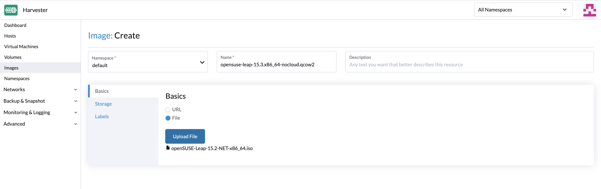
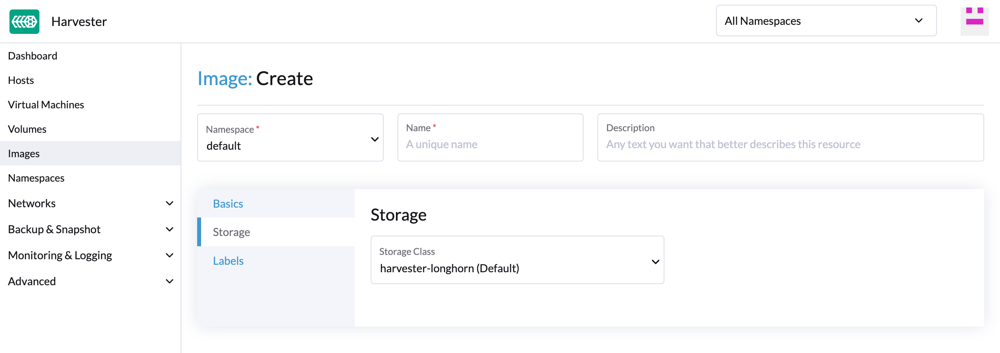
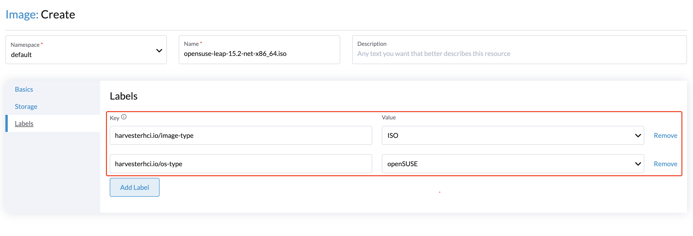

Téléverser des images
Actuellement, il existe trois méthodes prises en charge pour créer une image : téléverser des images via URL, téléverser des images via des fichiers locaux et créer des images via des volumes.
Téléverser des images via URL
-
UI
-
API
-
Terraform
Pour importer des images de machine virtuelle dans la page Images, saisissez une URL accessible depuis le cluster. La description et les étiquettes sont optionnelles.
|
|
De grands fichiers image peuvent causer des problèmes de mémoire dans SUSE Virtualization lorsque vous utilisez des StorageClasses tiers avec des URL de téléchargement hébergées sur des serveurs qui ne prennent pas en charge les requêtes de plage HTTP (par exemple, |

Pour importer une image de machine virtuelle depuis un dépôt en utilisant l’API, créez un objet VirtualMachineImage. Vous devez spécifier une URL accessible depuis le cluster.
Exemple :
apiVersion: harvesterhci.io/v1beta1
kind: VirtualMachineImage
metadata:
name: opensuse-leap
namespace: default
spec:
description: A human-readable description for the VM image
displayName: openSUSE-Leap
sourceType: download
url: "https://download.opensuse.org/repositories/Cloud:/Images:/Leap_15.5/images/openSUSE-Leap-15.5.x86_64-NoCloud.qcow2"
checksum: 80c27afb7cd791ac86ee1b0b0c572a242f6142579db5beac841e71151d370cd6Pour plus d’informations, consultez la référence API.
resource "harvester_image" "opensuse154" {
name = "opensuse154"
namespace = "harvester-public"
display_name = "openSUSE-Leap-15.4.x86_64-NoCloud.qcow2"
source_type = "download"
url = "https://downloadcontent-us1.opensuse.org/repositories/Cloud:/Images:/Leap_15.4/images/openSUSE-Leap-15.4.x86_64-NoCloud.qcow2"
}Télécharger des images via fichier local
Actuellement, les images qcow2, raw et image ISO sont prises en charge.
|

Erreur HTTP 413 dans SUSE Rancher Prime Gestion Multi-Cluster
Vous pouvez téléverser des images depuis l’écran Gestion Multi-Cluster sur l’interface SUSE Rancher Prime UI. Lorsque le statut d’une image est _Téléchargement mais que l’indicateur de progression affiche 0% pendant une période prolongée, vérifiez le code d’état de la réponse HTTP. 413 indique que la taille du corps de la requête dépasse la limite.

La taille maximale du corps de la requête doit être spécifique au cluster qui héberge SUSE Rancher Prime (par exemple, les clusters RKE2 ont une limite par défaut de 1 Mo mais aucune limite de ce type n’existe dans les clusters K3s).
La solution actuelle consiste à téléverser des images depuis l’interface SUSE Virtualization UI. Si vous choisissez de téléverser des images depuis l’interface SUSE Rancher Prime UI, vous devrez peut-être configurer les paramètres associés sur le serveur d’entrée (par exemple, proxy-body-size dans NGINX).
Si SUSE Rancher Prime est déployé sur un cluster RKE2, effectuez les étapes suivantes :
-
Modifiez l’entrée SUSE Rancher Prime.
kubectl -n cattle-system edit ingress rancher -
Indiquez une valeur pour
nginx.ingress.kubernetes.io/proxy-body-size.Exemple :

-
Supprimez l’image bloquée, puis redémarrez le processus de téléversement.
Téléversement prolongé d’images volumineuses dans SUSE Rancher Prime Gestion Multi-Cluster
Si vous téléversez une grande image (plus de 10 Go) depuis l’écran Gestion Multi-Cluster sur l’interface utilisateur SUSE Rancher Prime, l’opération peut prendre plus de temps que d’habitude et le statut de l’image (Téléversement) peut ne pas changer.
Ce comportement est lié à proxy-request-buffering dans la configuration d’ingress, qui est également spécifique au cluster qui héberge SUSE Rancher Prime.
La solution actuelle consiste à téléverser des images depuis l’interface utilisateur SUSE Virtualization. Si vous choisissez de téléverser des images depuis l’interface utilisateur SUSE Rancher Prime, vous devrez peut-être configurer les paramètres associés sur le serveur d’ingress (par exemple, proxy-request-buffering dans NGINX).
Si SUSE Rancher Prime est déployé sur un cluster RKE2, effectuez les étapes suivantes :
-
Modifiez l’entrée SUSE Rancher Prime.
kubectl -n cattle-system edit ingress rancher -
Désactiver
nginx.ingress.kubernetes.io/proxy-request-buffering.Exemple :

-
Supprimez l’image bloquée, puis redémarrez le processus de téléversement.
Téléversement d’images précédemment téléchargées depuis SUSE Virtualization
À partir de v1.5.5, Longhorn compresse les images de base pour le téléchargement. Si vous essayez de téléverser une image de base compressée, SUSE Virtualization rejette la tentative et affiche le message Échec du téléversement : la taille du fichier téléversé xxxx doit être un multiple de 512 octets car Longhorn utilise directIO par défaut car les données compressées violent l’alignement des données de Longhorn.
Avant de téléverser, décompressez les images de base en utilisant la commande gzip -d <file name>.
Créer des images via des volumes
Sur la page Volumes, cliquez sur Exporter l’image. Entrez le nom de l’image et sélectionnez une StorageClass pour créer une image.

StorageClass d’image
Lors de la création d’une image, vous pouvez sélectionner une StorageClass et utiliser ses paramètres prédéfinis tels que les réplicas, les sélecteurs de nœuds et les sélecteurs de disques.
|
L’image n’utilise pas directement le Au lieu de cela, elle crée une StorageClass spéciale en arrière-plan avec un nom de préfixe de |

Étiquettes d’image
Vous pouvez ajouter des étiquettes à l’image, ce qui aide à identifier le type de système d’exploitation plus précisément. De plus, vous pouvez ajouter des étiquettes personnalisées pour le filtrage si nécessaire.
Si le nom de votre image ou l’URL contient des informations valides, l’interface utilisateur reconnaît automatiquement le type de système d’exploitation et la catégorie d’image pour vous. Sinon, vous pouvez également spécifier manuellement ces étiquettes correspondantes sur l’interface utilisateur.
